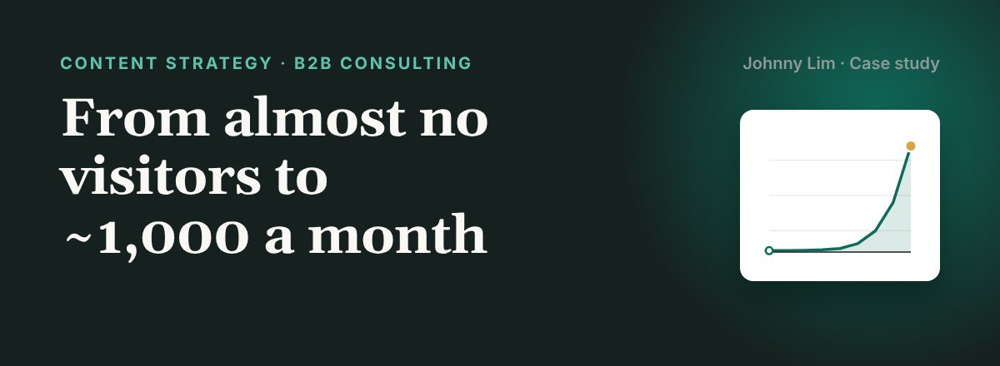
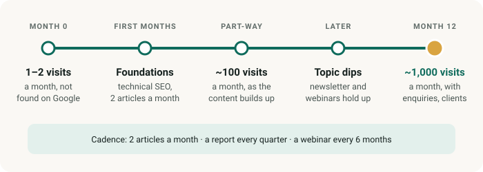

From almost no visitors to around 1,000 a month: content strategy for a B2B consulting firm

A B2B consulting firm had a website that Google couldn't find, with 1–2 visits a month and no blog. I fixed the technical SEO, chose topics from Search Console, keyword research and interviews with the consultants, and published two articles a month, a report every quarter and a webinar every six months, promoted through SEO, LinkedIn and a HubSpot newsletter. Within 12 months, the website went from 1–2 visits a month to around 1,000, bringing in enquiries, webinar sign-ups and new clients.
- 1–2website visits a month at the start
- ~1,000visits a month after 12 months
- 2 a montharticles, plus a report every quarter
- New clientsplus enquiries and webinar sign-ups

The situation
The firm had a website, but Google couldn't find it. It had no blog, and it got 1–2 visits a month. The site also sold online courses, but almost nobody found their way to them.
The firm had real expertise. Its consultants knew their field and their clients' problems well. None of that was on the website, so nobody searching for help could find it.
What I did
1. Fixed the technical SEO
Before publishing anything, I made sure Google could crawl and index the site. Without that, no amount of content would have been found.
2. Chose topics from data and from the consultants
I used Google Search Console and keyword research to see what people were searching for. Then I interviewed the consultants to understand what their clients were actually asking about. The data showed what people searched for. The consultants explained why, and what a useful answer looked like.
3. Published on a steady schedule
I wrote the content myself, with the consultants adding industry input. I aimed for two articles a month, a more in-depth report every quarter and a webinar every six months. A steady schedule mattered more than any single piece: it gave search engines a reason to keep coming back, and gave readers a reason to subscribe.
4. Promoted it through search, LinkedIn and email
Every piece was written for search first, then shared on LinkedIn and sent to subscribers in a HubSpot newsletter. SEO and the newsletter made the biggest difference. Search brought new people in, and the newsletter kept the firm top of mind, so they came back.
5. Kept the brand consistent
I also created the firm's brand guide, so colours, imagery and tone stayed consistent across articles, reports, webinars and emails. When content comes out regularly, consistency is what makes it recognisable.
The results
- From 1–2 visits a month to around 1,000 a month within 12 months, with about 100 a month part-way through the year.
- Better rankings for the searches that mattered most to the firm.
- Enquiries, webinar sign-ups and new clients from people who found the firm through its content.
I tracked results in Google Analytics and HubSpot.
What didn't work as planned
In the second half, interest in the firm's core topic dipped across the market as the wider business climate shifted, and visits started to fall. Search traffic depends on how many people are looking, and that was outside our control.
What kept visits up was the audience we already had. I leaned on the HubSpot newsletter, ran more webinars and published in-depth reports, so people who already knew the firm kept coming back even when fewer new people were searching.
What I learned
- Data shows what people search for. Experts show what they need. Search Console and keyword research found the topics, and the consultant interviews made the content worth reading.
- Consistency beats one-off hits. Two solid articles a month, every month, built more than occasional big pieces would have.
- Build an audience you own. When search interest dipped, the newsletter list kept the firm in front of people. Rankings can change, but your subscribers stay.
- What I'd do differently today: work on GEO and AI search visibility from the start, not just SEO, so the content also gets picked up by AI Overviews and ChatGPT.
For how I approach this today, read SEO vs GEO vs AEO vs AIO, or see how SEO and GEO worked together for an executive search firm.